4 Validation
In this section we look into validating different types of predictions. Our focus herby lies on proper scoring rules, as well as skill scores for comparison to climatology.
4.1 Evaluating cross-validation predictions
Here we evaluate the cross-validation data prepared in Section 3.2.1. The data table contains observations for past years for the seasons MAM and FMA, along with ‘best-guess-predictions’, meaning that they are single numbers, not probabilities:
## lon lat season prediction observation year month
## 1: 20.5 -11.5 FMA 316.19452 369.36932 1982 2
## 2: 20.5 -11.5 MAM 202.94411 208.28058 1982 2
## 3: 20.5 -11.5 FMA 316.20178 252.47144 1983 2
## 4: 20.5 -11.5 MAM 205.24921 161.22548 1983 2
## 5: 20.5 -11.5 FMA 317.43375 267.44031 1984 2
## ---
## 167330: 51.5 22.5 FMA 25.44651 19.71902 2012 2
## 167331: 51.5 22.5 FMA 25.59836 27.55773 2013 2
## 167332: 51.5 22.5 FMA 26.03941 25.14965 2014 2
## 167333: 51.5 22.5 FMA 26.03053 22.23634 2015 2
## 167334: 51.5 22.5 FMA 26.00327 34.84376 2016 2Such predictions are often called point forecasts, whereas forecasts specifying probabilities are called probabilistic. We already have the data in the shape we want it to be, containing both predictions and observations as one column each. Let’s have a look at the bias in our predictions:
### check out local biases:
bias_dt = dt_cv[,.(bias = mean(prediction - observation)), by = .(lon,lat,season)] # grouping by lon,lat, and season means that the mean is taken over all years.
bias_dt[,range(bias)] # get an idea of the range for plotting## [1] -12.64276 15.80456rr = c(-15,15) # fix range, to make plots comparable
pp1 = ggplot_dt(bias_dt[season == 'FMA'],
data_col = 'bias',
rr = rr, # fix range to make it comparable to pp2
mn = 'bias of FMA prediction',
midpoint = 0)
pp2 = ggplot_dt(bias_dt[season == 'MAM'],
data_col = 'bias',
rr = rr,
mn = 'bias of MAM prediction',
midpoint = 0)
# show plots:
ggpubr::ggarrange(pp1,pp2) 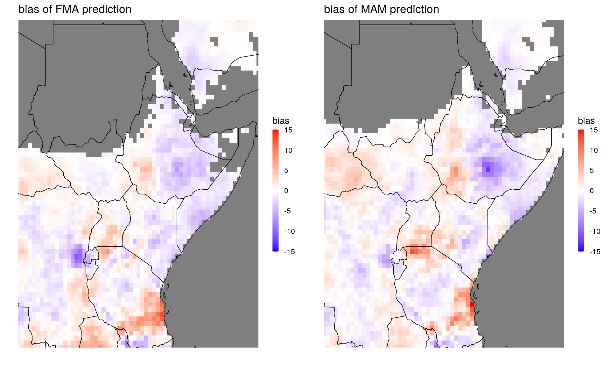
We can use the function MSESS_dt to compute MSE skill scores. The skill is computed relative to leave-one-year-out climatology, which is calculated automatically in the process.
### analyze mean square error skill scores
msess = MSESS_dt(dt_cv,
fc_col = 'prediction', # column name of forecasts
obs_col = 'observation', # column name of observations
by_cols = c('lon','lat','season')) # the skill scores should be computed for each location and each season separately
# get range for plotting:
msess[,range(MSESS)]## [1] -0.3447786 0.3436327rr = c(-0.35,0.35)
pp1 = ggplot_dt(msess[season == 'FMA'],
data_col = 'MSESS',
rr=rr,
mn = 'MSE skill score, FMA')
pp2 = ggplot_dt(msess[season == 'MAM'],
data_col = 'MSESS',
rr=rr,
mn = 'MSE skill score, MAM')
ggarrange(pp1,pp2)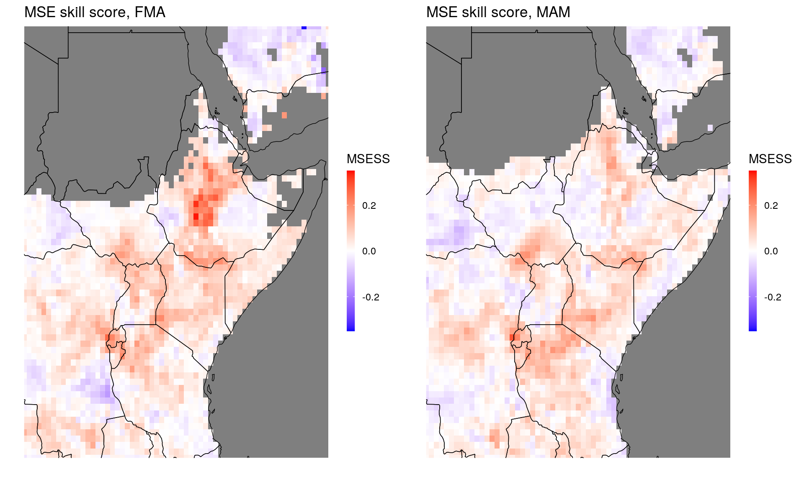
Here, as for all skill scores, positive values indicate that the prediction has higher skill than climatology, negative values indicates lower skill. Skill scores are moreover ‘standardized’ such that a score of 1 corresponds to a perfect forecast.
Note that there is also a (faster) function MSE_dt if we’re not interested in skill scores, but simply want to compute MSEs. Both function can also handle ensemble predictions, see function documentation.
If we want to analyze results by countries, we can use the function add_country_names that adds a column with country names to the data table:
## lon lat season MSE clim_MSE MSESS country
## 1: 23.0 11.0 MAM 303.14287 308.54726 0.017515586 Sudan
## 2: 23.5 9.0 MAM 751.99749 731.22747 -0.028404319 Sudan
## 3: 23.5 10.5 MAM 294.52421 297.75507 0.010850729 Sudan
## 4: 23.5 11.0 MAM 229.63428 228.55108 -0.004739428 Sudan
## 5: 24.0 9.0 MAM 426.41982 400.60929 -0.064428203 Sudan
## ---
## 2703: 50.0 11.0 MAM 185.52785 200.07593 0.072712761 Somalia
## 2704: 50.5 9.5 MAM 48.67772 46.13510 -0.055112437 Somalia
## 2705: 50.5 10.0 MAM 28.67013 27.39041 -0.046721342 Somalia
## 2706: 50.5 11.0 MAM 55.81477 54.05239 -0.032604992 Somalia
## 2707: 50.5 11.5 MAM 60.25333 60.52558 0.004498041 Somaliamsess_by_country = msess[,.(MSE = mean(MSE),
MSESS = mean(MSESS)), by = country] # take averages by country
print(msess_by_country)## country MSE MSESS
## 1: Sudan 358.0374 0.015229343
## 2: South Sudan 901.2060 0.021752470
## 3: Rwanda 1657.1758 0.129892834
## 4: Tanzania 3588.8147 0.037472556
## 5: Burundi 2263.1621 0.110301016
## 6: Uganda 1578.1713 0.044870020
## 7: Ethiopia 1863.0355 0.049708565
## 8: Kenya 2404.1271 0.061263744
## 9: Eritrea 447.6274 0.009834729
## 10: Somalia 1121.8166 0.023641155
## 11: Djibouti 111.1771 0.029694437Skill scores strongly depend on the skill of the climatological prediction, see Section 4.3. This makes it somewhat problematic to average them in space, as skill scores for different grid points with different climatologies have different meanings. A more appropriate way to see whether the prediction outperformed climatology on average for a given country is by considering average score differences:
# positive values indicate better performance than climatology:
msess[,.(score_diff = mean(clim_MSE - MSE)),by = country]## country score_diff
## 1: Sudan 3.9749273
## 2: South Sudan 26.8968614
## 3: Rwanda 267.0480866
## 4: Tanzania 100.4944114
## 5: Burundi 277.8132419
## 6: Uganda 69.6647566
## 7: Ethiopia 91.0034502
## 8: Kenya 172.7090383
## 9: Eritrea -0.1503512
## 10: Somalia 28.1771594
## 11: Djibouti 5.0474522The MSE (and its associated skill score) penalizes both systematic forecast errors (i.e. biases) and non-systematic forecast errors. The latter are a consequence of general forecast uncertainty and there is no easy way to reduce them. Biases, however, can often be removed through statistical post-processing, and it is therefore interesting to consider measures for forecast performance that penalize only non-systematic forecast errors, thus giving an idea of the potential skill of a forecast system.
The standard metric to assess the potential skill is the Pearson correlation coefficient (PCC). This is the usual correlation coefficient where forecasts and observations are standardized by their respective climatological means and standard deviations, and then the average product of these standardized variables is calculated. The function PCC_dt performs these calculations and is used in the same way as MSESS_dt above.
### calculate Pearson correlation coefficients
PCC = PCC_dt(dt_cv,
fc_col = 'prediction', # column name of forecasts
obs_col = 'observation', # column name of observations
by_cols = c('lon','lat','season')) # the correlation coefficient should be computed for each location and each season separately
# the maximal range for a correlation coefficient is [-1,1], but sometimes it is useful to narrow it:
rr = c(-0.75,0.75)
pp1 = ggplot_dt(PCC[season == 'FMA'],
data_col = 'rho',
rr=rr,
mn = 'Pearson correlation coefficient, FMA')
pp2 = ggplot_dt(PCC[season == 'MAM'],
data_col = 'rho',
rr=rr,
mn = 'Pearson correlation coefficient, MAM')
ggarrange(pp1,pp2)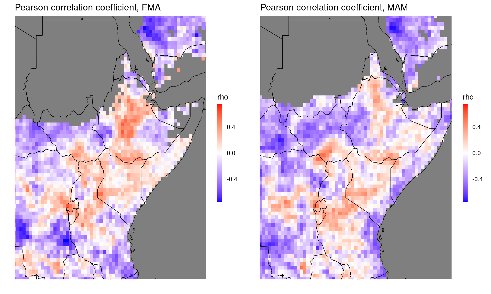
While there is no technical requirement that the forecasts and observations follow a particular probability distribution when the Pearson correlation coefficient is employed, this metric is best suited for continuous distributions (i.e. it is unlikely to encounter duplicate values) that are relatively symmetric around the mean. For shorter (e.g. weekly) accumulation periods and in dry climates, the distribution of precipitation usually becomes rather skewed and contains a number of zeros. A new metric, the coefficient of predictive ability (CPA), has recently been developed and constitutes an excellent alternative to the PCC as a measure of potential forecast skill in that situation of strongly asymmetric distributions with multiple identical values. See here for more background information about the CPA. The function CPA_dt performs the calculations and is used in the same way as MSESS_dt and PCC_dt above.
### calculate coefficient of predictive ability
CPA = CPA_dt(dt_cv,
fc_col = 'prediction', # column name of forecasts
obs_col = 'observation', # column name of observations
by_cols = c('lon','lat','season')) # the CPA should be computed for each location and each season separately
# the maximal range for the CPA is [0,1]
# a value of 0.5 corresponds to no skill (more details can be found in the document under the link given above)
rr = c(0,1)
pp1 = ggplot_dt(CPA[season == 'FMA'],
data_col = 'cpa',
rr=rr,
mn = 'Coefficient of predictive ability, FMA')
pp2 = ggplot_dt(CPA[season == 'MAM'],
data_col = 'cpa',
rr=rr,
mn = 'Coefficient of predictive ability, MAM')
ggarrange(pp1,pp2)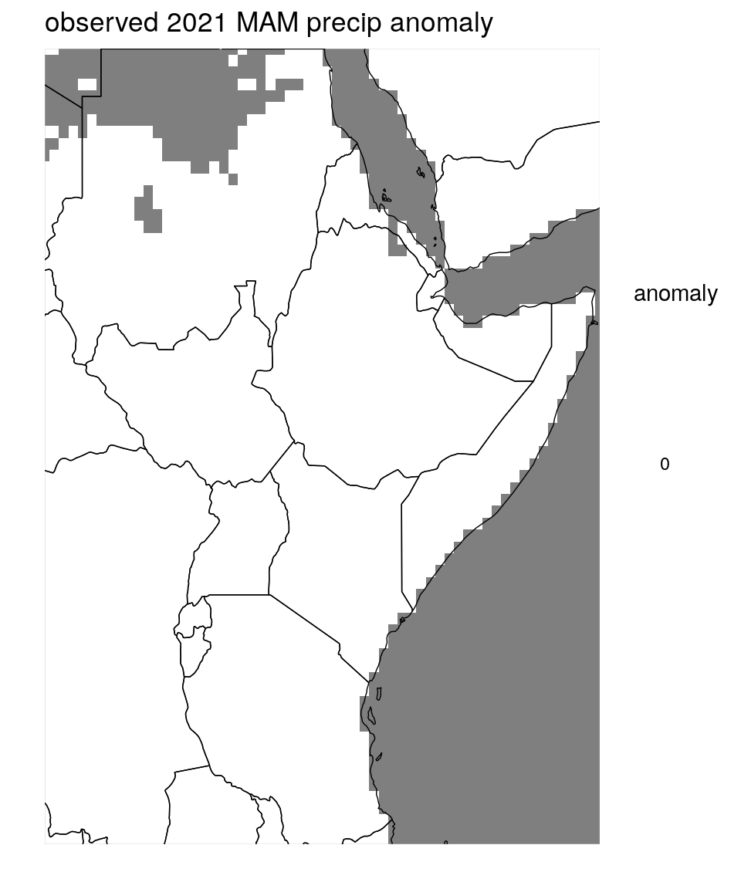
Just like the MSESS, PCC and CPA can be averaged by country using the function add_country_names:
# check out average PCCs and CPAs per country:
PCC = add_country_names(PCC)
CPA = add_country_names(CPA)
PCC_by_country = PCC[,.(rho = mean(rho)), by = country]
CPA_by_country = CPA[,.(cpa = mean(cpa)), by = country]
print(PCC_by_country)## country rho
## 1: Sudan -0.19636469
## 2: South Sudan -0.16295459
## 3: Rwanda 0.30049770
## 4: Tanzania -0.05635683
## 5: Burundi 0.23708677
## 6: Uganda 0.01509619
## 7: Ethiopia 0.01459451
## 8: Kenya 0.07685737
## 9: Eritrea -0.14705925
## 10: Somalia -0.08751838
## 11: Djibouti -0.05427490## country cpa
## 1: Sudan 0.3989506
## 2: South Sudan 0.4130657
## 3: Rwanda 0.6490021
## 4: Tanzania 0.4802252
## 5: Burundi 0.6187519
## 6: Uganda 0.5011563
## 7: Ethiopia 0.5158528
## 8: Kenya 0.5364750
## 9: Eritrea 0.4310610
## 10: Somalia 0.4713838
## 11: Djibouti 0.50319024.2 Evaluating Tercile Forecasts
Next, we’ll turn our attention to one of the main products disseminated at GHACOFs, the probabilistic forecasts whether the coming season will see a below normal-, normal-, or above normal amount of rainfall. Since these three categories are defined by climatological terciles, we call them tercile forecasts. From an evaluation perspective, there are two different scenarios: Either we get the prediction as a vector of three probabilities, or we just get the probability for the most likely category. Evaluating a vector of three probabilities is preferrable, because it conveys more detailed information about the forecast: Say, for example, two competing models predicted the probabilities (0.5, 0.3, 0.2) and (0.5, 0.49, 0.01), respectively (in the order below, normal, high). Say now, after observing the predicted season, it turns out that the rainfall was in fact above normal. In this case, both predictions were pretty bad, but the first model at least assigned a 20% chance to above-normal-rainfall, whereas the second model only assigned a 1% chance to that outcome. So the first prediction was substantially better. However, if we only look at the category with the highest predicted probability, the two models can’t be distinguished, as they both appear as (0.5,-,-).
Therefore, considering all three probabilities of the prediction allows for better forecast evaluation. This does not mean, however, that the communication of the prediction to the public needs to contain all three probabilities, which would likely be more confusing than helpful. In the next subsection we’ll discuss how to evaluate a fully probability forecast (vector of three probabilities). In the section thereafter, we address the case where only the most likely category is known.
4.2.1 Proper scoring rules for full tercile forecasts
Proper scoring rules are tools for evaluating predictive performance. Given a prediction and the corresponding observation, a proper score returns a single number. We consider negatively oriented scores, that is, lower scores indicate better performance. Popular examples are the Brier Score, Mean Square Error (MSE), Log-likelihood score or the continuous ranked probability score (CRPS).
When we’re dealing with tercile forecasts of precipitation, we can use the Multicategory Brier Score (MBS). It is defined as \[\text{MBS} := (p_1 - e_1)^2 + (p_2 - e_2)^2 + (p_3 - e_3)^2.\] Here, \(p_1,p_2,\) and \(p_3\) are the predicted probabilities for the three categories, and \(e_i\) is 1 if the observation falls in the \(i\)th category, and 0 else. For example, if the observation falls into the first category, the MBS would be \[(p_1 - 1)^2 + p_2^2 + p_3^2.\]
This score is strictly proper, meaning that it rewards calibration and accuracy. In our particular situation, the climatological forecast is uniform (since climatology is used to define the tercile categories), and the climatological forecast (1/3,1/3,1/3) always gets a MBS of 2/3. It is therefore very convenient to consider the Multicategory Brier Skill Score (MBSS) \[MBSS := \frac{3}{2}(2/3 - \text{MBS}).\] Like other skill scores, this score is normalized in the sense that a perfect forecaster attains a skill score of 1 and a climatology forecast always gets a skill score of 0. Note that, for the MBSS, higher values indicate better performance, unlike for the MBS (similar as for other scores such as MSE).
Tercile forecasts are a particular situation where the skill score is a strictly proper scoring rule itself (albeit positively oriented). This means in particular that we may average Multicategory Brier Skill Scores accross different grid points without being concerned about different scales of precipitation. If, for example, the average MBSS of our prediction over all gridpoints in Ethiopia is above 0, our prediction for Ethiopia was on average better than climatology.
Let’s now look at a data example, contained in the data_dir specified here. The core function is simply called MBSS_dt. The main work is organizing the data in one data table of the correct format, which was done in Section 3.2.3. In particular, recall that we can use the function add_tercile_cat to determine which observations are in the lower or upper climatology tercile.
## lon lat normal above below prec year tercile_cat
## 1: 22.0 -11.5 0.2794044 0.3959641 0.3246315 271.66216 2021 1
## 2: 22.0 -11.0 0.3176142 0.3509704 0.3314154 279.13827 2021 1
## 3: 22.0 -10.5 0.2897301 0.3781255 0.3321443 300.32019 2021 1
## 4: 22.0 -10.0 0.3133837 0.3520903 0.3345260 332.45370 2021 1
## 5: 22.0 -9.5 0.3076811 0.3480890 0.3442299 407.19163 2021 1
## ---
## 2939: 51.5 20.0 NA NA NA 26.43442 2021 -1
## 2940: 51.5 20.5 NA NA NA 25.20947 2021 -1
## 2941: 51.5 21.0 NA NA NA 21.71183 2021 -1
## 2942: 51.5 21.5 NA NA NA 23.18140 2021 -1
## 2943: 51.5 22.0 NA NA NA 23.29202 2021 -1
## clim
## 1: 200.78224
## 2: 218.82563
## 3: 219.82354
## 4: 224.44427
## 5: 237.77492
## ---
## 2939: 14.02317
## 2940: 13.39437
## 2941: 13.75870
## 2942: 14.37246
## 2943: 17.47911# get Multicategory Brier Skill Score:
mbss = MBSS_dt(dt,obs_col = 'tercile_cat')
ggplot_dt(mbss,high = 'darkgreen',low = 'purple',discrete_cs = TRUE,binwidth = 0.2,midpoint = 0, mn = 'MBSS for MAM tercile forecast 2021')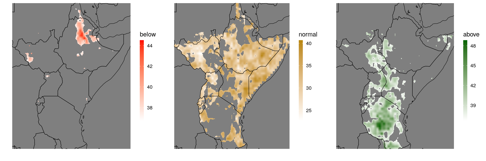
Areas colored in green show where the prediction was better than climatology, areas colored in purple indicate worse performance. The MBSS indicates, for example, good forecast performance over most of Tanzania.
To see whether the forecast was overall better than climatology, we average the MBSS:
# check out the MBSS by country:
mbss = add_country_names(mbss)
mean_mbss = mbss[,.(mean_mbss = mean(MBSS,na.rm = T)), by = country]
print(mean_mbss)## country mean_mbss
## 1: Sudan -0.101016447
## 2: South Sudan -0.064356237
## 3: Rwanda 0.061607937
## 4: Tanzania 0.136468567
## 5: Burundi 0.114454899
## 6: Uganda 0.118914478
## 7: Ethiopia -0.002694009
## 8: Kenya 0.009083932
## 9: Eritrea -0.045155095
## 10: Somalia -0.033277965
## 11: Djibouti 0.009452135Finally, let’s check whether this makes sense, by comparing climatology to the prediction:
dt[,anomaly:= prec - clim]
ggplot_dt(dt[year == 2021],'anomaly',high = 'blue',low = 'red',midpoint = 0, mn = 'observed 2021 MAM precip anomaly')# or, as discrete plot:
pp1 = ggplot_dt(dt[year == 2021],'anomaly',
high = 'blue',low = 'red',midpoint = 0,
rr = c(-100,100),discrete_cs = TRUE,breaks = seq(-100,100,40),
mn = 'observed 2021 MAM precip anomaly')
# also, let's plot the predicted probabilities:
pp2 = ggplot_dt(dt,'below',midpoint = 0.33,discrete_cs = TRUE,binwidth = 0.05,mn = 'predicted probability below')
pp3 = ggplot_dt(dt,'normal',midpoint = 0.33,discrete_cs = TRUE,binwidth = 0.05,mn = 'predicted probability normal')
pp4 = ggplot_dt(dt,'above',midpoint = 0.33,discrete_cs = TRUE,binwidth = 0.05,mn = 'predicted probability above')
ggpubr::ggarrange(pp1,pp2,pp3,pp4,ncol = 4)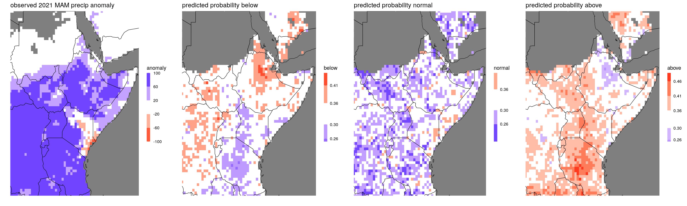 As we can see, the season was very wet overall. The prediction was overall wet as well, especially over the western part of the considered region, where the prediction also got assigned a positive MBSS.
4.2.2 Evaluation when only the highest probability category is avaliable
As argued above, it is preferrable to evaluate tercile forecasts that are given as full probability vector containing all three probabilities. However, we might still face scenarios where we only have the highest probability category available, e.g. some older forecasts for which only this has been saved. What can we do in this case?
Intuitively, a promising candidate for a proper score seems to be the two-category-Brier score on the category with the highest probability \[BS_{\max} = (p_{\max}-e_{\max})^2,\] where \(p_{\max}\) is the probability assigned to the maximum probability category, and \(e_{\max} = 1\) if the observation falls into that category and \(0\) else. Unfortunately, it turns out that this score is improper: it does not reward calibration and accuracy. Let us look at an example forecast for just one gridpoint:
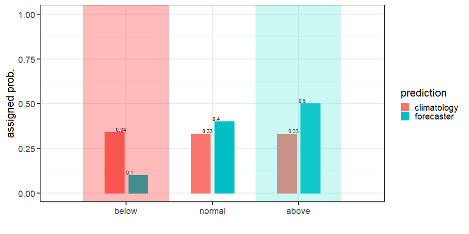
In this example, we compare a near-climatological forecast (red) with a prediction issued by a forecaster (blue). The highest probability categories are indicated by the shaded area: for the forecaster it is the ‘above normal’ category, for the climatology-forecast the ‘below normal’ category. Below the figure, the scores achieved by the forecaster and climatology are shown for all three possible outcomes. The climatology gets a better (lower) Brier score when the observation is ‘normal’ or ‘above normal’. This is paradoxical, since the forecaster assigned higher probabilities to these categorie. This highlights the improperness of the max-Brier score: When evaluating predictions with this score, the best forecast does usually not get preferred.
This is unintuitive, because the (standard) Brier score is proper. However, the Brier score is designed for predictions of two-category-events with fixed categories. In the definition of \(BS_{\max}\) the categories are ‘highest probability category’ vs. the rest. Therefore, the two categories depend on the forecast probabilities and therefore may vary between different predictions. This makes the Brier score improper.
However, a nice application of Theorem 1 of this paper shows that there is a class of proper scoring rules that can be evaluated, when only the probability of the most likely category is known. For example, we can use the score \[ cBS_\max:= p^2_{\max} - 2p_\max e_\max + 1.\] Note that this score satisfies \(cBS_\max=BS_{\max} - e_\max +1\), so it’s a corrected version of the max-Brier score which is proper and avoids the problems above. Adding \(+1\) in the definition of the score is not necessary but convenient: it ensures that the score is nonnegative and a perfect score is 0.
Usually we want to know whether our prediction outperformed climatology. For most scores we can consider skill scores, but unfortunately this does not work here. Climatology assigns to all three categories equal probabilities (1/3), and therefore does not really have a maximum-probability-category. Thus, the definition of \(e_\max\) makes no sense for a climatological forecaster. However, a reasonable viewpoint is that for a climatological forecast the maximum-probability-category can be picked at random, since all categories are getting assigned the same probability. This means that climatology achieves a score of 4/9 with probability 1/3 (when \(e_\max = 1\)), but only achieves a score of 10/9 with probability 2/3. Thus, on average the climatological forecast achieves a score of \(\frac 1 3 \frac 4 9 + \frac 23 \frac {10}9 = \frac{24}{27}\). A forecast that attains a \(cBS_\max\) of below 24/27 performs on average better than climatology. We therefore define the ‘skill score’ \[cBSS_\max := 1 - \frac{27}{24}cBS_\max.\] Note that this is not a skill score in the strict sense, but can be interpretet similarly: values above 0 indicate higher skill than climatology on average, with a \(cBSS_\max\) of 1 corresponding to a perfect forecast.
To try this out in action, let us look at the 2021 tercile forecasts
# data_dir = '/nr/project/stat/CONFER/Data/validation/example_data/202102/' # as in section 3
fn = 'Ens_Prec_1monLead_MAM_Prob_EnsRegrCPT-avg.nc'
dt = netcdf_to_dt(paste0(data_dir,fn))## File ~/nr/project/stat/CONFER/Data/validation/example_data/202102/Ens_Prec_1monLead_MAM_Prob_EnsRegrCPT-avg.nc (NC_FORMAT_CLASSIC):
##
## 3 variables (excluding dimension variables):
## float below[lon,lat]
## average_op_ncl: dim_avg_n over dimension(s): model
## units:
## lead: 1
## _FillValue: -9999
## float normal[lon,lat]
## _FillValue: -9999
## lead: 1
## units:
## average_op_ncl: dim_avg_n over dimension(s): model
## float above[lon,lat]
## _FillValue: -9999
## lead: 1
## units:
## average_op_ncl: dim_avg_n over dimension(s): model
##
## 3 dimensions:
## time Size:0 *** is unlimited ***
## [1] "vobjtovarid4: **** WARNING **** I was asked to get a varid for dimension named time BUT this dimension HAS NO DIMVAR! Code will probably fail at this point"
## lat Size:381
## units: degrees_north
## lon Size:326
## units: degrees_east
##
## 7 global attributes:
## creation_date: Thu Feb 18 17:06:05 EAT 2021
## Conventions: None
## source_file: Objective Forecast
## description: Obtained by averaging CPT and local regression
## title: Tercile Consolidated Objective Forecast
## history: Mon Feb 22 10:28:53 2021: ncrename -v LAT,lat Ens_Prec_1monLead_MAM_Prob_EnsRegrCPT-avg.nc
## Mon Feb 22 10:28:43 2021: ncrename -v LON,lon Ens_Prec_1monLead_MAM_Prob_EnsRegrCPT-avg.nc
## Mon Feb 22 10:28:26 2021: ncrename -d LON,lon Ens_Prec_1monLead_MAM_Prob_EnsRegrCPT-avg.nc
## Mon Feb 22 10:27:42 2021: ncrename -d LAT,lat Ens_Prec_1monLead_MAM_Prob_EnsRegrCPT-avg.nc
## NCO: netCDF Operators version 4.9.3 (Homepage = http://nco.sf.net, Code = http://github.com/nco/nco)dt = dt[!is.na(below) | !is.na(normal) | !is.na (above)]
p1 = ggplot_dt(dt,data_col = 'below', midpoint = dt[,min(below,na.rm = TRUE)])
p2 = ggplot_dt(dt,data_col = 'normal', midpoint = dt[,min(normal,na.rm = TRUE)], high = 'darkgoldenrod') # see https://www.r-graph-gallery.com/ggplot2-color.html for an overview of color names.
p3 = ggplot_dt(dt,data_col = 'above', midpoint = dt[,min(above,na.rm = TRUE)], high = 'darkgreen')
ggarrange(p1,p2,p3,ncol = 3)## Warning: Raster pixels are placed at uneven horizontal intervals and will be
## shifted. Consider using geom_tile() instead.## Warning: Raster pixels are placed at uneven vertical intervals and will be
## shifted. Consider using geom_tile() instead.## Warning: Raster pixels are placed at uneven horizontal intervals and will be
## shifted. Consider using geom_tile() instead.## Warning: Raster pixels are placed at uneven vertical intervals and will be
## shifted. Consider using geom_tile() instead.## Warning: Raster pixels are placed at uneven horizontal intervals and will be
## shifted. Consider using geom_tile() instead.## Warning: Raster pixels are placed at uneven vertical intervals and will be
## shifted. Consider using geom_tile() instead.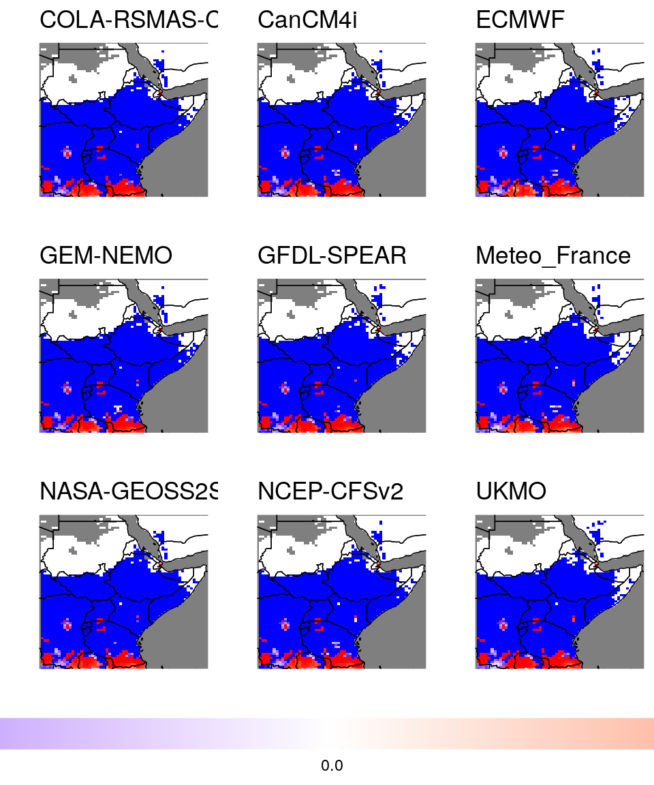
In order to evaluate these forecast the high resolution CHIRPS-data of the past is missing!
## File ~/nr/project/stat/CONFER/Data/validation/example_data/202102/PredictedProbabilityRain_Mar-May_Feb2021_new.nc (NC_FORMAT_NETCDF4):
##
## 3 variables (excluding dimension variables):
## float normal[lon,lat] (Contiguous storage)
## _FillValue: -1
## float above[lon,lat] (Contiguous storage)
## _FillValue: -1
## lead: 1
## average_op_ncl: dim_avg_n over dimension(s): model
## type: 2
## float below[lon,lat] (Contiguous storage)
## _FillValue: -1
## lead: 1
## average_op_ncl: dim_avg_n over dimension(s): model
## type: 0
##
## 2 dimensions:
## lat Size:77
## _FillValue: NaN
## units: degrees_north
## lon Size:66
## _FillValue: NaN
## units: degrees_east4.3 Exceedence probabilities
Another forecast product issued at GHACOFs are exceedence probabilities of precipitation for certain thresholds, generally related to crops important for the region. A proper scoring rule based on the predicted exceedence probability \(p_\text{exc}(c)\) of a threshold \(c\) is the Brier score of exceedence \[BS_{ex}(c) := (p_\text{exc}(c) - 1\{y>c\})^2,\] where \(1\{y>c\}\) equals 1 if the observation \(y\) exceeded threshold \(c\), and 0 else. Skill scores for comparison with a climatological forecast can be calculated in the usual way. The climatological forecast for the exceedence probability is the fraction of past observations that exceeded the threshold. In Section 3.2.4 we already derived this dataset:
## lon lat month year rthr model pexcd clim prec
## 1: 21.5 -12.0 2 2021 200 GEM-NEMO 0.996 NA NA
## 2: 21.5 -12.0 2 2021 200 CanCM4i 0.995 NA NA
## 3: 21.5 -12.0 2 2021 200 NASA-GEOSS2S 0.996 NA NA
## 4: 21.5 -12.0 2 2021 200 GFDL-SPEAR 0.990 NA NA
## 5: 21.5 -12.0 2 2021 200 COLA-RSMAS-CCSM4 0.993 NA NA
## ---
## 632444: 51.5 23.5 5 2021 400 COLA-RSMAS-CCSM4 0.000 NA NA
## 632445: 51.5 23.5 5 2021 400 NCEP-CFSv2 0.000 NA NA
## 632446: 51.5 23.5 5 2021 400 ECMWF 0.000 NA NA
## 632447: 51.5 23.5 5 2021 400 Meteo_France 0.000 NA NA
## 632448: 51.5 23.5 5 2021 400 UKMO 0.000 NA NAThis dataset contains predictions of exceedence (by different models) for several thresholds (rthr), as well as observed rainfall and a climatological prediction for the exceedence probabilities. This is everything we need to compute the \(BS_{ex}\)-skill score. To this end, we have the function BSS_ex_dt. If we would not have a climatological exceedence forecast available, we could have still computed the \(BS_{ex}\)-score using the function BS_ex_dt. This is still usefull for comparing competing models (see below), but does not tell us where the prediction is better or worse than climatology.
bss_dt = BSS_ex_dt(dt_prexc,fc_col = 'pexcd',threshold_col = 'rthr',obs_col = 'prec',by_cols = c('model','month','lon','lat'))
print(bss_dt[!is.na(BS_ex)])## model month lon lat rthr BS_ex clim_BS_ex
## 1: COLA-RSMAS-CCSM4 2 22.0 -12.0 200 9.000183e-06 0.390625
## 2: COLA-RSMAS-CCSM4 2 22.0 -12.0 300 9.063039e-01 0.000625
## 3: COLA-RSMAS-CCSM4 2 22.0 -12.0 350 7.499560e-01 0.000000
## 4: COLA-RSMAS-CCSM4 2 22.0 -12.0 400 5.041000e-01 0.000000
## 5: COLA-RSMAS-CCSM4 2 22.0 -11.5 200 9.999695e-07 0.360000
## ---
## 436468: UKMO 5 51.5 22.5 400 0.000000e+00 0.000000
## 436469: UKMO 5 51.5 23.0 200 0.000000e+00 0.000000
## 436470: UKMO 5 51.5 23.0 300 0.000000e+00 0.000000
## 436471: UKMO 5 51.5 23.0 350 0.000000e+00 0.000000
## 436472: UKMO 5 51.5 23.0 400 0.000000e+00 0.000000
## BSS_ex
## 1: 0.9999770
## 2: -1449.0863070
## 3: -1.0000000
## 4: -1.0000000
## 5: 0.9999972
## ---
## 436468: 0.0000000
## 436469: 0.0000000
## 436470: 0.0000000
## 436471: 0.0000000
## 436472: 0.0000000Skill scores are generally not defined when the climatological prediction is perfect and the climatological score is zero. This happens frequently for exceedence probabilities (e.g. lines 3 and 4 in the data table above) at locations where the considered threshold has never been exceeded in the observation. Simply for plotting reasons we put the skill score to -1 in this case if the prediction scores above 0 (since the climatological prediction wwas better in this case), and to 0 if both climatology and prediction assign a probability of 0. Let us look at the skill scores by the different models for the March forecast for exceedence level 200mm:
# make a list of skill score plots:
theme_set(theme_bw(base_size = 10)) # smaller font
plot_list = list()
for(mod in unique(bss_dt[,model])) # 1 plot for each model
{
plot_list = c(plot_list,list(ggplot_dt( bss_dt[model == mod & month == 3 & rthr == 200],
'BSS_ex',
mn = mod,
high = 'red',
midpoint = 0,
rr= c(-1,1),
guide = guide_colorbar(title = NULL, barwidth = 75, direction = 'horizontal'))))
}
ggpubr::ggarrange(plotlist = plot_list,ncol = 3,nrow = 3,common.legend = TRUE,legend = 'bottom')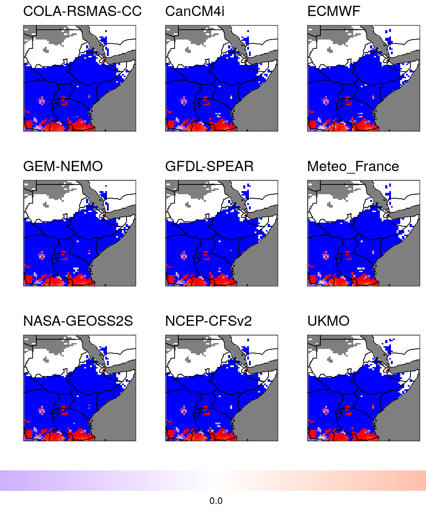 Here, red color indicates better performance of the prediction than climatology. Large areas of the map are blue, which indicates better performance of the climatological forecast than of the prediction models. However, these are mostly areas where the observations never exceeded 200mm. Therefore, the climatological forecast issued a 0% chance of rainfall exceeding 200mm, whereas all actual prediction models issued a small positive probability and therefore performed ‘worse’. This not so much highlights a problem of the forecasts than rather a problem of skill scores, which become degenerate whenever the climatological prediction is near perfect.
For comparing overall performance, we can average scores spatially. Note that, because of the above-mentioned effect, it is important not to average skill scores. However, since we have a climatology forecast in our data table, we can compute a spatially averaged score for climatology as well. Thus, we can compare whether the prediction models performed on average better or worse than climatology.
mean_scores = bss_dt[,.(BS_ex = mean(BS_ex,na.rm = T)),by = .(model,month,rthr)]
# get climatology score as well:
mean_clim_score = bss_dt[model == model[1],.(BS_ex = mean(clim_BS_ex,na.rm = T)),by = .(month,rthr)]
mean_clim_score[,model := 'clim']
mean_scores = rbindlist(list(mean_scores,mean_clim_score),use.names = TRUE)
print(mean_scores)## model month rthr BS_ex
## 1: COLA-RSMAS-CCSM4 2 200 0.3206483211
## 2: COLA-RSMAS-CCSM4 2 300 0.3043674982
## 3: COLA-RSMAS-CCSM4 2 350 0.2669425955
## 4: COLA-RSMAS-CCSM4 2 400 0.2114291366
## 5: COLA-RSMAS-CCSM4 3 200 0.3896413080
## ---
## 156: clim 4 400 0.0033205367
## 157: clim 5 200 0.0263377224
## 158: clim 5 300 0.0047990815
## 159: clim 5 350 0.0015935347
## 160: clim 5 400 0.0006833022Here, every model gets assigned a single mean score for each month and each threshold (the mean score over all gridpoints). Lower values indicate better overall performance. Let us plot the data:
pp = ggplot(mean_scores) + geom_line(aes(x = month,y = BS_ex,color = model,linetype = model)) + facet_wrap(~rthr,nrow = 1)
print(pp)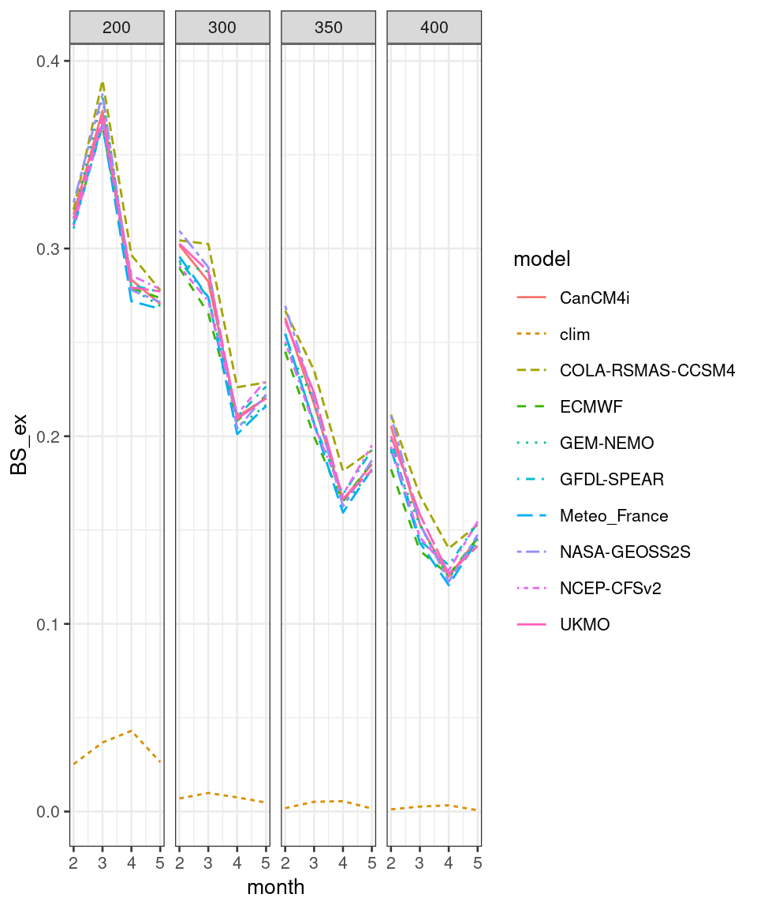
The plot shows that, averaging over all grid points, a climatological forecast does much better than all the systems, which probably indicates that the systems need to be bias corrected.
4.4 Temperature
In our folder of example data we also have a file containing temperature predictions. The file already contains correlations as well. Here we simply visualize these correlations as plots:
## File ~/nr/project/stat/CONFER/Data/validation/example_data/202102/TrefEnsRegr_monthly.nc (NC_FORMAT_CLASSIC):
##
## 6 variables (excluding dimension variables):
## float below[lon,lat,model,lead]
## units: %
## _FillValue: -9999
## float above[lon,lat,model,lead]
## units: %
## _FillValue: -9999
## float normal[lon,lat,model,lead]
## units: %
## _FillValue: -9999
## float corr[lon,lat,model,lead]
## units: cor
## _FillValue: -9999
## float tref[lon,lat,model,lead]
## units: K
## _FillValue: -9999
## float anom[lon,lat,model,lead]
## units: K
## _FillValue: -9999
##
## 4 dimensions:
## lon Size:66
## units: degreesE
## long_name: lon
## lat Size:77
## units: degreesN
## long_name: lat
## model Size:5
## units: number
## long_name: model
## lead Size:3
## units: month
## long_name: lead# plot correlations of predictions for all five models at all lead_times:
# create list of plots:
plot_list = list()
for(leadtime in 1:3)
{
for(mod in 1:5)
{
plot_list = c(plot_list,list(ggplot_dt(dt[model == mod & lead == leadtime],
'corr',
rr = c(-1,1),
mn = paste0('model ',mod,', lead ',leadtime),
discrete_cs = TRUE,
binwidth = 0.2,
guide = guide_colorbar(title = NULL,
barwidth = 75,
direction = 'horizontal')))) }
}
#plot as grid:
do.call('ggarrange', c(plot_list,ncol = 5,nrow = 3,common.legend = TRUE,legend = 'bottom'))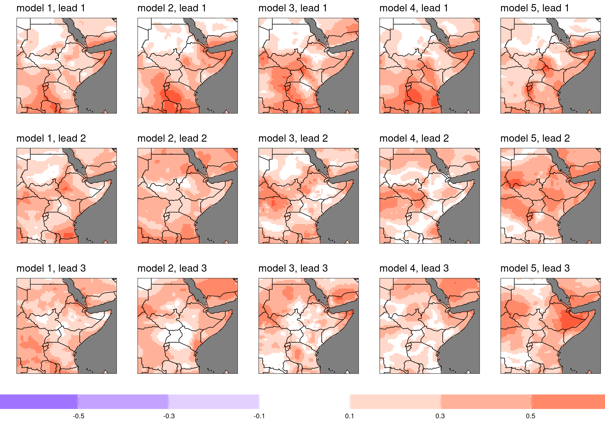